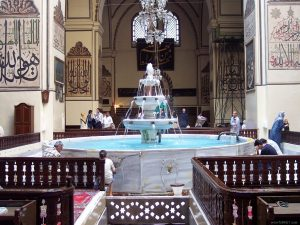

Bursa Sağlık Turizmi
Bursa tarihsel arka plan olarak bir sağlık şehridir. 5’inci yüzyıla gittiğinizde Çekirge’de Thedora Kaplıcaları’nı, 14’üncü yüzyılda Yıldırım’a gittiğinizde Osmanlı’nın ilk hastanesi ve Tıp Fakültesi olan Darüşşifası’yı dimdik ayakta görürsünüz. Yine 16’ıncı yüzyılda Kanuni Sultan Süleyman’ın Bursa’da Kükürtlü Kaplıcaları’nda şifa bulduğuna tanıklık edersiniz. Bursa’nın jeotermal kuşakta yer alması ve termal kaynaklarının güçlü olması Termal Turizm açısından büyük bir avantajdır. 18 kaplıca işletme belgeli tesisin bulunması ve bu tesislerdeki suların birçok hastalığı tedavi etmesi de termal açıdan Bursa’nın potansiyelini göstermektedir. Kent genelinde yüzlerce yıldır kullanılan çok sayıda termal tesisin yanında, klinik standartlarda fizik tedavi ve rehabilitasyon, SPA-Wellness merkezleri ve nitelikli otelleriyle, sahip olduğu yüksek standartlara karşın, ekonomik paket fiyatlarıyla sağlık turistlerine hizmet vermeyi bekliyor. Son yıllarda yapılan sağlık ve termal yatırımlarıyla da Bursa, adeta bölgenin sağlık üssü ve termal başkenti olarak konumlanıyor. Bursa aynı zamanda yaşlı projeleri, yaşlı dostu şehir konsepti ve özellikle Geriatri Hastanesi ve Enstitüsü ile de yaşlı ve engelli turizminin de yeni adresi olmaya hazırlanıyor.
Bursa’nın avantajları;
- Bilgi ve beceriyle donanmış yeterli sayıda sağlık personeli
- ABD ve AB’ye göre aynı kalitede ve teknolojininin ekonomik sunumu
- Kolay ulaşılabilir olması
- Sağlık hizmetleri dışında tarihi ve doğal zenginlikleri ile tatil programlarına da imkân sunması
- Tarih ve İnanç Turizmi Merkezleri (İznik, Trilye, Apolyont)
- Kış Turizmi (Uludağ)
- Yaşlı ve engelli turizmi (Mudanya)
- Speleoterapi –Mağara Turizmi (Ayva İni ve Oylat Mağaraları)
- Termal Merkezler (Bursa Kaplıcaları-Oylat Kaplıcaları- MK Paşa-Dümbüldek Kaplıcaları)